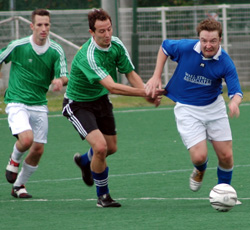
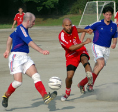

OLD STORIES - September 2005
Geckoes off the mark
|  |
|
Simon Bromwell gets a tug as he tries to leave the 'Shogun Knights' defence behind. |
Hachijoji Sunday 25th September. Wall Street Geckoes claimed their first three points of the season with a convincing win over newly promoted (and newly named) Shogun Knights. Gino Dilberto opened the scoring with a powerful header on the 15th minute and WSG never looked like giving up the lead after that. A lovely finish from Kazu Kikuchi after some patient build up play saw the Geckoes going into the interval 2-0 up. Soon after the break new midfielder Peter Exton opened his account for the team with a neatly taken goal and Phil Stroud ensured that the Geckoes would take all 3 points with a good finish.
SK stuck to the task at hand and were rewarded with a scrappy, but deserved goal late on in the 2nd period from David Hales. Quentin, the ref, had a very good match, and his sensible decision making kept the game flowing and prevented any fare ups that have previously marred this fixture.
GAZ
Vagabonds Slow JETS Advance.
Hachijoji Sunday 25th September. The Saitama Jets and the Vagabonds both had to settle for a 2-2 draw at Hachioji Park in a game where the balance shifted several times.
The Jets, fresh off the back of two good league victories, got off to a dream start. Gary Garner threaded a delicate ball through to forward Ryan Loren, who shrugged off the defender before rounding the keeper and slotting home after about 5 minutes. more...
GG
Maritizio Held by Newcomers Stoneds FC
 |
|
Vernon Gill give away a free kick as he welcomes Stoneds FC's captain Kurata Aoyama to the TML. |
Monday 19th September, OiFuto. Newcomers Stoneds FC held Maritizio to a 1 all draw in their first TML outing.
Maritizio were the first to strike, as a corner was met by a fierce, near post volley, giving the keeper no chance. The lead only lasted a few minutes though as mid-way through the first half, the Maritizio keeper was caught out of position and could only parry a Stoneds half volley into the inside of the side netting. 1-1
The 2nd half had more action than the first and both keepers were forced into action on numerous occasions. Hidenori Yoshioka, Stoneds midfield playmaker, showed he will be a handful for Div 2 defences as he made countless chances but there were to be no more goals.
TML
AFC Show New Resolve
September 18th Big Circus. Andy Watanabe led AFC Wanderers to only their 2nd victory in the TML, having won just 1 match in season 2, by taking advantage of a Vagabonds team in disarray.
A 1st half goal by Olly Worsfold was enough to give the Wanderers all 3 points, although a few more good chances were squandered. At the other end, the AFC goal was rarly threatened as Vagabonds struggled to link up or create anything in the middle. more...
AW
Jets Down Luckless Celts
September 13th Tennozu Isle. The Saitama Jets began the third TML season showing a resolve to continue improving, and ultimately win promotion to the TML First Division. The campaign kicked off in Tennozu against the Kanto Celts, who the Jets were fortunate to defeat in a come-from-behind victory last season.
For more click here.
GG
BFC Display New Found Resolve
September 12th Big Circus, Hon Atsugi. Partly due to new summer signings and partly due to that great British resolve, BFC scored two second-half goals to defeat an energetic France FC team who themselves managed to score one goal with the very last kick of the game. Fluid play, combined with a new-look hardened midfield and back-four, with the welcome inclusion of the ever-industrious James Morson and hard-man Leigh Manson, saw the BFC break the French defensive line time and time again in the first half, with some dangerous runs from the BFC front men, who seemed to have found and extra yard of pace over the summer. However, some stout defending by the French kept the score equal at half-time. 15-minutes into the second half and it was a text book header from former Shanghai Shooter Jon Best, following a pin-perfect cross, that sent BFC into the lead. Mid-way through the second half France FC became ever-more industrious stringing together some good passes, but failing to hold the ball up in attack, or hit the target. BFC striker Jon Day increased the lead for BFC, with 20 minutes still on the clock, when the ball broke free from a throng of players and he volleyed home from the edge of the 6-yard box. In the final 10-minutes the French surged forward looking for a break and a sweetly struck shot just inside the area forced a miraculous save from new BFC keeper Jyurki ....... France FC finally found the back of the net when BFC failed to clear their lines following a corner and the quick-witted France FC striker slotted home from a tight angle, but the final score line saved the blushes of the BFC defense. All in a great game played in fantastic "TML spirit" - hard but fair. click here.
TML
Hibs Bag a Bunch
New signing Tomomitsu Kuni (of ex-BFC fame) scored the opening two goals for Tokyo Hibernian FC and set-up the third, in the space of 12-minutes, in a drumming of newly promoted Shogun Nights FC (formerly Nova FC) who received a rude awakening to 1st division football with a 6-1 loss in their opening match. Hibs throughout turned defense into attack with some precision football and their movement off the ball and all-round route-one football suggests that they are gunning for for the top-spot having been pipped at the post by the Swiss last season. Shogun Nights FC, to their credit, looked dangerous in the last third of the pitch, with both strikers not afraid to unleash and keep renowned shot-stopper Hitoshi Ono on his toes. However, Shogun Nights FC failed to consistently hold on to the ball in midfield and for the best part were chasing Hibs shadows around the park, especially in the first half when they conceded 5. click here.
TML
All Bark & No Bite as Jetro Stall Sala
September 4th OiFuto Dai Ni. There is an old saying in Japanese, which states roughly that if everyone accepted apologies, there would be no need for the police. Sala midfielder Stephen Brooke-Smith came to understand this sentiment on Sunday. Upon rather churlishly flicking the ball away after the whistle was blown for a Jetro free kick, he found his apologies falling on deaf ears. Kazu, the man in black, reached for the yellow card and after only 4 minutes it was quite clear, TML Season 3 was well and truly underway. more...
TML
BFC HOLD OFF GECKOES
September 4th OiFuto Dai Ni. A goal early in the 1st half was enough to secure victory for BFC against a determined Wallstreet Geckoes team who are looking to rise from mediocrity this season. A new-look BFC team looked strong at the back and dangerous on the break, however Geckoes defended resolutely and will feel that had they finished their early chances the 3-points would've been theirs. Geckoes will refuse to be rolled-over by any of the big teams in the 1st division and this gritty, tenacious and industrious team may even cause one or two upsets as the season progresses. For more on this game click here.
TML
SWISS START ON WINNING NOTE
September 3rd OiFuto Dai Ichi. Swiss Kickers started their 3rd season with TML the same way as they left off; winning!
Last years Div 1 joint top scorer Karl Hahne, took the first of 3 first-half goals that were enough to see them to a 3-1 win. The French were no pushovers though, creating as many good chances as the Swiss.
Swiss' keeper Peter Pauli was forced to make some good saves, including tipping a great shot from Etsushi Yoshikoshi over the bar. It took great volley by Julien Sepheriades to finally beat hime looking to set up an exciting second half.
Although more chanes did arise, it proved to be the last goal of the game as the Swiss went into that all too familiar spot for them, the top of the table - more...
TML